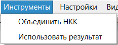
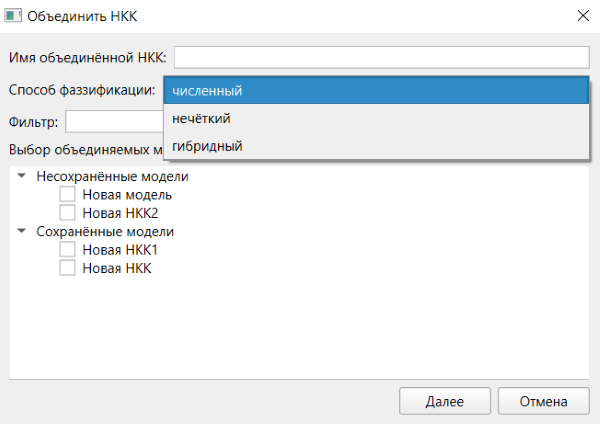
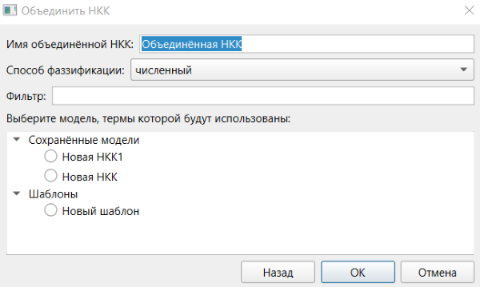

1. Joining FCMs is needed to aggregate expert assessments. It can be performed using the "Join FCM" option in the "Tools" menu.

2. After this option is selected, the FCM join window opens. This window contains all saved and unsaved models. Filtering can be performed by checking whether model names contain the string entered in the "Filter line" field. At any moment in this window, the "Result FCM name" and the "Fuzzification mode" can be changed. Three fuzzification modes are available: numeric, fuzzy, and hybrid.

3. After selecting the models to join, click the "Next" button. This moves to the stage where the model whose terms will be used for joining is selected. At this stage, one model must be chosen whose terms become the terms of the resulting FCM and are also used during fuzzification. This model can be selected from the models chosen at the previous step, as well as from all available templates. Filtering is also available at this stage.

4. To return to the previous step, click the "Back" button. To complete joining, click "OK".